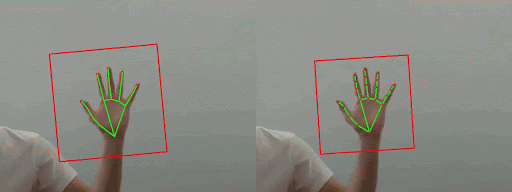
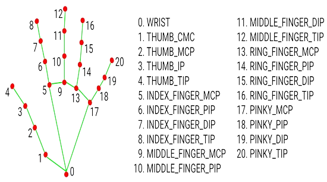

Machine Learning · Computer Vision · NLP
Turkish Sign Language
Recognition & Animation
Real-time TİD recognition from webcam using a BiLSTM model (Top-1: 76.14%). No GPU required for inference — runs entirely in the browser backed by a FastAPI server.

Model Performance
Evaluated on a cross-subject validation split — 31 training signers / 6 validation signers, reflecting real-world generalization.
Recognition
MediaPipe Holistic runs entirely in the browser (WASM) and extracts hand + pose landmarks in real time. The 252-dimensional vectors are streamed via WebSocket to a FastAPI backend where the BiLSTM model performs inference.
- Top-3 predictions with confidence bars
- Session stats: total predictions, avg confidence, latency ms
- Scrollable prediction history
- 226 sign classes, 16 frames per sample
Animation
Type any word or sentence — a stick figure performs each sign sequentially with smooth frame interpolation. Landmark data comes directly from AUTSL videos, not synthesized motion.
- 184 available signs in animation mode
- Smooth interpolation between consecutive signs
- Browsable sign grid with all available words

Development Pipeline
Landmark Extraction
MediaPipe Holistic (model_complexity=2) processes every AUTSL video. 16 frames sampled per video → 225 landmarks per frame (21 left-hand + 21 right-hand + 33 pose keypoints × xyz). Color and depth streams concatenated: 450 features/frame for the Transformer model.
Transformer Baseline — 226 classes
Transformer Encoder with sinusoidal positional encoding, 4× Multi-Head Attention blocks (8 heads), AdamW optimizer with cosine decay, label smoothing 0.1, data augmentation (Gaussian noise, time masking, scale jitter, horizontal flip). Input: (16, 450).
BiLSTM Final Model — 184 classes
42 low-accuracy classes removed (val accuracy < 50%). Redesigned to use only hand landmarks (feat_dim=252) to reduce input noise. Bidirectional LSTM(256) → LSTM(128) → Dense(512) → Dense(256) → Dense(184, softmax). Labels remapped with sklearn.LabelEncoder.
Dataset — AUTSL
| Property | Value |
|---|---|
| Total classes | 226 words |
| Total videos | ~38,000 |
| Format | RGB + Depth, 512×512, 30fps |
| Total signers | 43 |
| Train signers | 31 (~28k videos) |
| Validation signers | 6 (~4.4k videos) |